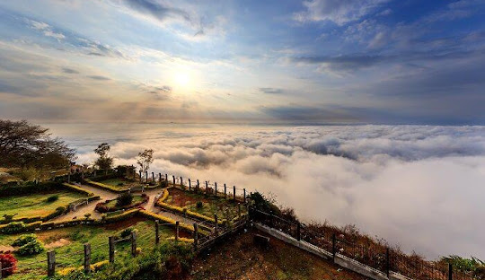

"Discover the Majestic Nandi Hills – A Scenic Escape Near Bangalore"
Nandi Hills is a picturesque hill station located just 60 kilometers from Bangalore. Known for its stunning sunrise views, historical significance, and lush greenery, it’s a perfect getaway for nature lovers and adventure seekers. Once a summer retreat for Tipu Sultan, the Nandi Hills has a rich history and is home to several ancient temples and forts, making it both a spiritual and historical landmark.
Scenic Views and Natural Beauty
Panoramic Views: The hilltop offers breathtaking panoramic views of the surrounding plains, valleys, and nearby hills. The sunrise view from Nandi Hills is particularly popular among visitors.
Flora and Fauna: The area is rich in biodiversity, with various species of birds, butterflies, and flora that make it a haven for nature enthusiasts and photographers.
nature view is phenominal
Key Attractions
Nandi Temple: The temple at the summit is dedicated to Nandi, the sacred bull of Lord Shiva, and is a key attraction for spiritual visitors.
Tipu’s Drop: A historic point where prisoners were allegedly thrown to their death during Tipu Sultan’s reign. The site offers a dramatic view of the surrounding landscape.
Fort and Watchtowers: Explore remnants of Tipu Sultan’s fortifications, which offer insight into the region’s history.
How To Reach
By Bus: Buses also operate from Bangalore to Nandi Hills.
By Car: A 1.5-hour drive from Bangalore through well-maintained roads.
Activities to Do
Trekking: Nandi Hills is a popular trekking destination with several trails that lead to the summit, offering both an adventurous and scenic experience.
Photography: Capture stunning landscapes, the hilltop temple, and the wildlife in the area.
Sunrise and Sunset Views: The early morning and evening hours provide the most spectacular views, with the sun rising over the horizon and casting golden hues over the landscape.
Paragliding: Some operators in the area offer paragliding experiences for those seeking an adrenaline rush and a bird’s-eye view of Nandi Hills.
Visitor Information
Best Time to Visit: The best time to visit Nandi Hills is between October and March when the weather is pleasant. Early morning is ideal for catching the sunrise.
Timings: Nandi Hills is open from 6:00 AM to 10:00 AM for visitors (timings may vary based on the season).
Local Cuisine
Cafes and Eateries: Several small cafes and restaurants at the hilltop offer refreshments and local snacks, like idli, dosa, and coffee.
Nearby Eateries: Explore local South Indian cuisine at nearby restaurants like MTR and VV Puram Food Street.
Visitor Tips
Safety: Always be cautious when hiking or trekking on the hills, as some paths can be steep or challenging.
Carry Water: Stay hydrated as it can get quite hot, especially in the afternoon.
Weather: Dress appropriately based on the time of year and be prepared for early morning chills.